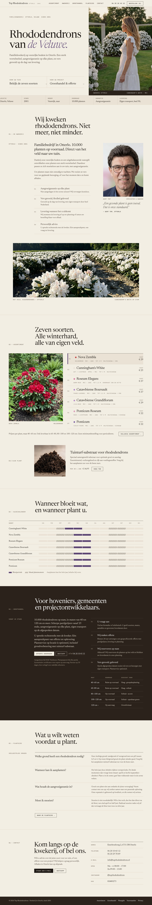
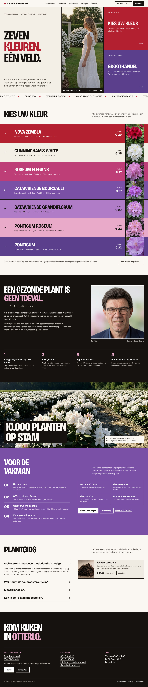
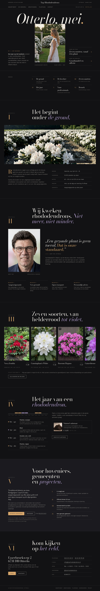

Кликабельные статические макеты. Все три построены с нуля и сознательно не повторяют старый сайт (ни палитру, ни шрифты, ни структуру хиро). Контент, фото, видео и факты — только реальные, из старого репозитория. Откройте каждый макет на десктопе и на телефоне.

Спокойный «домен»-регистр: бумага, торфяно-коричневый, вересково-лиловый акцент. Шрифты Newsreader + IBM Plex Mono. Линованная сетка как у каталога винодельни. Хиро — текст слева, вертикальное видео справа как колонна. Ассортимент — список-реестр с большим фото, календарь цветения, тёмный блок groothandel.

Смелый плакатный язык: плоские цветовые поля, взятые из реальных оттенков семи сортов, толстые линии, крупный узкий гротеск Bricolage Grotesque + Instrument Sans. Хиро-триптих: заголовок / видео / две цветные «двери». Ассортимент — полосы-свотчи по цвету цветения. Бегущая строка с фактами.

Тёмный журнальный номер: обложка «Otterlo, mei.» с Bodoni Moda, видео как обложечное фото, оглавление и шесть глав — земля, садовод, семь сортов (горизонтальная галерея), год растения, для профессионалов, визит. Янтарный акцент из «золотого часа» видео, Work Sans для текста.
prefers-reduced-motion (видео заменяется кадром).A · 1440A · 390 B · 1440B · 390 C · 1440C · 390